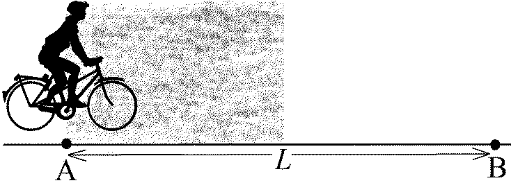
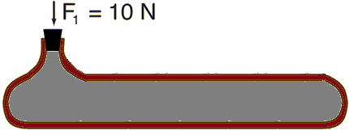

Задача 1. Спорт за отличници Трите части на задачата са независими!

Част 1.
Любител колоездач решил да измине пътя от град А до град B по шосе с Фиг. 1 дължина L = 10 km - фиг. 1. Той знаел, че ако кара с обичайната си скорост, ще му трябва време t0 = 30 min, за да пристигне в град B. През първата половина от пътя имало мъгла и колоездачът трябвало да кара с 4 km/h по-бавно от обичайното. Той решил да навакса и през втората половина от пътя карал с 4 km/h по-бързо от обичайното, като мислел, че така все пак ще успее измине разстоянието от А до B за време t0. Правилно ли е разсъждавал колоездачът? Ако не, намерете с колко минути се е отклонил от времето t0. (3 точки)
Част 2. Атлет тренира бягане с две препятствия върху писта с дължина 3a = 108 m. Препятствията са разположени както е показано на фиг. 2. Атлетът тръгва със скорост v0, но след всяко препятствие скоростта му намалява с 1 m/s. За колко време атлетът ще пробяга по цялата писта, ако разстоянието между двете препятствия му отнема t1 = 4 s? (3 точки)
 Фиг. 2
Фиг. 2
Част 3. Турист тръгва от хижа А до хижа B, разстоянието между които е L. През първата 1/3 от пътя той се движи със скорост v0. След това туристът почива за време t0 и отново тръгва, 3 изминавайки втората 1/3 от пътя със скорост v0 . Последната част от пътя той изминава със 2 3 скорост v0 . С каква постоянна скорост трябва да се движи туристът на връщане, ако иска да 4 измине разстоянието до хижа А за същото време? Изразете отговора си чрез L, v0 и t0. (4 точки)
1 Задача 2. Хубав шоколадов крем

За да приготви шоколадов крем, готвачът Реми се нуждае само от шоколад и сметана. Реми знае, че съотношението между двата продукта може да е най-различно, но за да стане кремът хубав, поне 20% от обема му трябва да е шоколад и поне 40% - сметана. Шоколадът има плътност $\rho$шок = 1,2 g/cm3, а плътността на сметаната е $\rho$сме = 0,5 g/cm3. Реми сипва крема на стандартни порции в купички с обем V0 = 200 cm3.
а) Реми приготвя два различни крема, чиито порции имат маса съответно m1 = 180 g и m2 = 120 g. Хубави ли са тези кремове? (4 точки)
б) Колко е масата на сметаната и колко на шоколада в порция крем с маса m = 170 g? (4 точки)
в) Приятелката на Реми, която е кокетна парижанка, не иска да изяде повече от 50 g крем, затова Реми сипва отделно специална порция за нея. Намерете най-обемната порция хубав крем, която може да ѝ поднесе Реми? (2 точки)
Задача 3. Флуиди в действие Двете части на задачата са независими!
Част 1. Бутилка с нестандартна форма е напълнена догоре с вода - фиг. 3. Сечението на гърлото е S, а площта на дъното е 200 S. Поставяме тапата и я натискаме със сила F1 = 10 N. Намерете натиска върху дъното на бутилката. Хидростатичното налягане, създадено от водата, както и нейната свиваемост, се пренебрегват. (2 точки)
 Фиг. 3
Част 2. Хидравличната машина на фиг. 4 има четири бутала - номерирани от 1 до 4, с площи съответно S1 = 0,4 m2, S2 = 0,3 m2, S3 = 0,2 m2 и S4 = 0,1 m2. Масата на буталата се пренебрегва.
а) Ако натиснем бутало (1) и то се премести на разстояние h = 0,3 m, с колко и накъде ще се преместят другите бутала? (4 точки)
б) Върху бутало (1) поставяме тежест, която натиска със сила F1 = 10 N. Намерете какви сили трябва да приложим върху другите бутала, така че те всички да застанат на едно и също ниво (хоризонталната пунктирна линия)? (4 точки)
 Фиг. 4
Фиг. 4